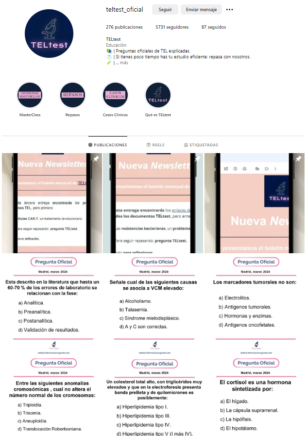

Educación científico-sanitaria para Técnicos Especialistas de Laboratorio (TEL) de diagnóstico Clínico y Biomédico
Bienvenidos a TELtest, tu plataforma educativa dedicada a Técnicos Especialistas de Laboratorio.
Estamos especializados en analizar y compartir preguntas de exámenes oficiales TEL, aportando explicaciones detalladas y recursos de estudio.
Si eres Técnico Especialista de Laboratorio de diagnóstico Clínico y Biomédico, este es tu sitio.
Síguenos en Instagram para ver nuestras publicaciones semanales con preguntas de exámenes oficiales y sus respuestas explicadas.
Síguenos en Instagram Próximamente lanzaremos una plataforma de estudio online que te permitirá acceder a todas las preguntas de exámenes TEL oficiales categorizadas por exámenes y temas junto con las respuestas correctas, explicaciones, vídeos y más contenido educativo. ¡Sigue atent@ a nuestras redes! 😊
Para más información, contáctanos en teltest.informacion@gmail.com.
Participa en nuestras encuestas periódicas para ayudarnos a mejorar. ¡Tu opinión es importante para nosotros!
Breve encuesta